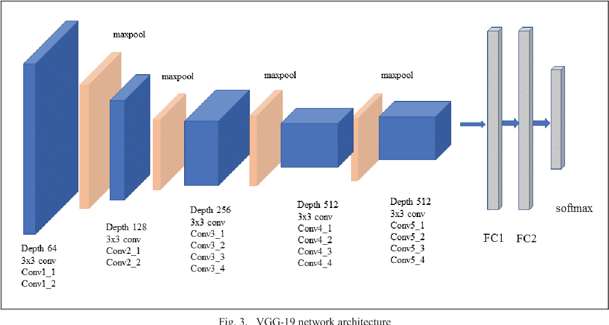
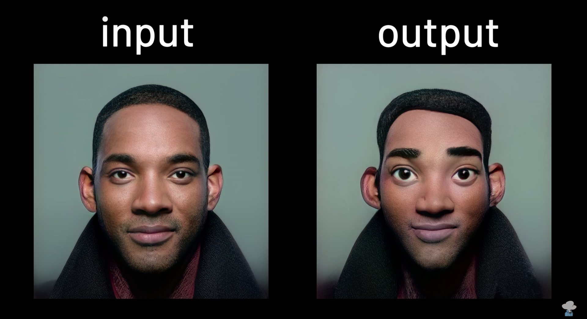
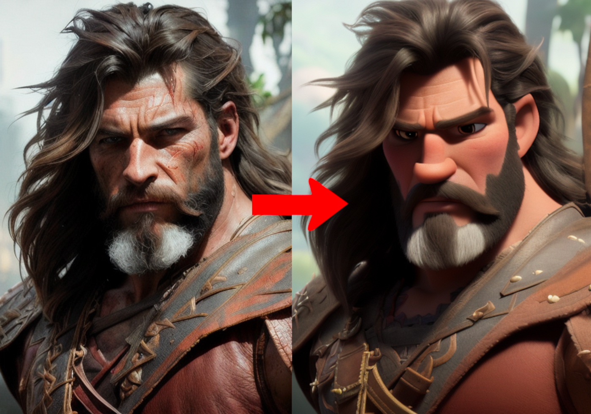
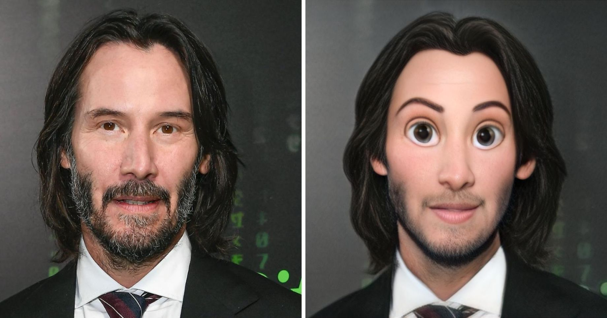

Comment fonctionnent les IA de type Cartoonify ?
L’effet "cartoonify" désigne la transformation d’une photo réaliste en un rendu stylisé proche d’un dessin animé ou d’une illustration. En IA, plusieurs approches ont été développées pour automatiser cette transformation.
🎨 1. Transfert de style
Le transfert de style conserve le contenu d’une image tout en lui appliquant l’esthétique d’un dessin animé. Il utilise des réseaux comme VGG19 pour fusionner contenu et texture. Précis mais lent, idéal pour les images fixes.
🤖 2. Réseaux adverses génératifs (GANs)
Des modèles comme CartoonGAN, AnimeGANv2/v3 utilisent un générateur et un discriminateur. Résultat : des images stylisées rapides et expressives, parfaites pour les effets “manga” ou “Pixar”.
🌫️ 3. Modèles de diffusion
Stable Diffusion, combiné à ControlNet, offre une flexibilité extrême avec des prompts textuels. Très créatif, mais parfois difficile à contrôler précisément sur les visages ou fresques complexes.
👤 4. Stylisation de portraits
Des modèles comme Toonify, StyleGAN-NADA ou VToonify sont conçus pour styliser les visages. Parfait pour les avatars ou caricatures, tout en respectant les proportions du visage original.
📋 Résumé comparatif des approches
- Transfert de style : précis, artistique, mais lent.
- GANs : rapides, résultats stylisés et populaires.
- Diffusion : contrôlable via texte, très créatif.
- Stylisation de portraits : idéal pour visages, avatars IA.